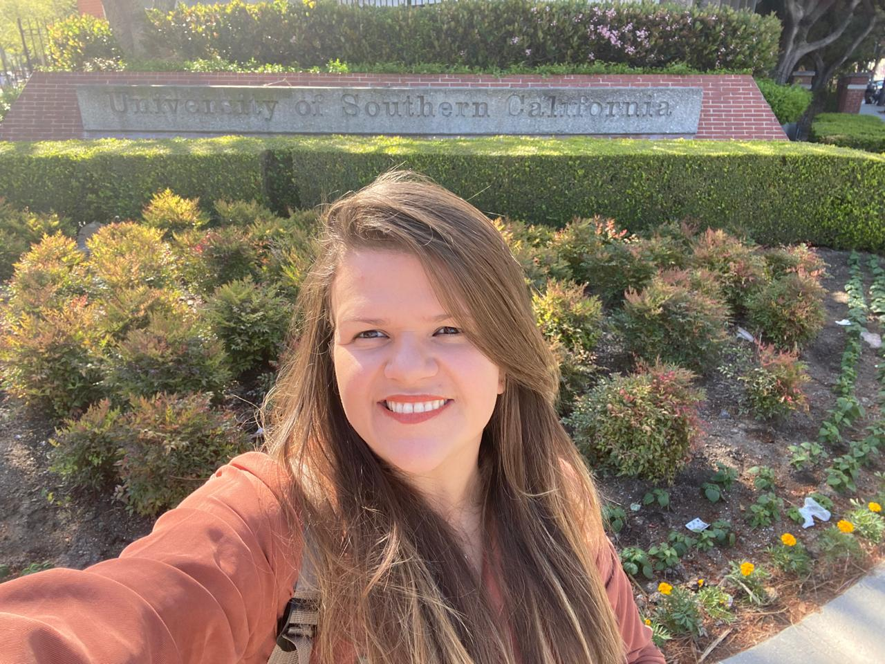

 Francielle Vargas
PhD in Computer Science - Natural Language Processing
E-Mail |
Google Scholar |
Linkedin |
GitHub |
ORCID |
Lattes |
CV |
I am a computer and language scientist with an MSc and a PhD in Natural Language Processing. I received my PhD and MSc in Computer Science and Computational Mathematics from the University of São Paulo (USP). Prior to that, I obtained a BS in Information Systems and a BA in Linguistics. During my PhD, I was a visiting researcher at the University of Southern California (USC) in the USA and an invited researcher and speaker at the Leibniz Institute for the Social Sciences (GESIS) in Germany. I have also been awarded the prestigious Google Latin America Research Award (LARA). In addition, I have actively contributed to ACL and AAAI conferences and workshops as a program committee member and co-organized ICWSM in 2021, 2022 and 2023, as well as hate speech shared tasks. Currently, I am co-organizing the Workshop on Online Abuse and Harms (WOAH). My research focuses on enhancing the explainability and fairness of deep learning models, with an emphasis on ethical implications in AI. I have worked on developing explainable models for complex tasks, such as hate speech detection and fact-checking, using post-hoc and self-explaining techniques to improve model transparency while also addressing fairness and bias mitigation.
Research Interests
- Responsible AI, Explainability and Interpretability, Bias Mitigation, Fairness
- Hate Speech and Offensive Language Detection, Toxicity, Radicalism and Morality
- Fact-Checking, Fake News and Media Bias Detection, Misinformation, and Factuality
- Opinion and Argument Mining, Emotion, Sentiment and Stylistic Analysis, Subjectivity
Research Projects
- 2024-Current: Brazilian Election Hate Speech Morality Corpus with Human-Annotated Rationales. USP & USC
- 2024-2024: Responsible and Explainable Fact-Checking through Fine-Grained Factual Reasoning. Google
- 2022-2024: Building Hate Speech Data Resources for the Hausa African Indigenous Language. Google
- 2020-2024: Towards Socially Responsible and Explainable Hate Speech Detection. University of São Paulo, Brazil
- 2022-2022: Expanding Evaluation Data for Multilingual Protest News Detection. Koç University, Turkey
- 2020-2020: Detecting Antisemitism on Social Media. Indiana University Bloomington, United States
Awards
- Google Latin America Research Award (LARA 2024)
- Diversity and Inclusion Grant Award (EMNLP 2024)
- Diversity and Inclusion Grant Award (NAACL 2024)
- Outstanding Academic Project and Honorable Mention (UFMG 2013)
- Outstanding Academic Project and Honorable Mention (UFMG 2012)
Publications
-
HateBRXplain: A Benchmark Dataset with Human-Annotated Rationales for Explainable Hate Speech Detection in Brazilian Portuguese
Isadora Salles, Francielle Vargas, Fabrício Benevenuto
31st International Conference on Computational Linguistics (COLING 2025). Abu Dhabi, UAE. pp. 1-10. 2025. to appear
-
Discourse Annotation Guideline for Low-Resource Languages
Francielle Vargas, Wolfgang Schmeisser-Nieto, Zohar Rabinovich, Thiago A.S. Pardo, Fabrício Benevenuto
Natural Language Processing Journal. Cambridge University Press. pp. 1-44. 2024. to appear
-
Context-Aware and Expert Data Resources for Brazilian Portuguese Hate Speech Detection
Francielle Vargas, Isabelle Carvalho, Thiago A.S. Pardo, Fabrício Benevenuto
Natural Language Processing Journal. Cambridge University Press. pp. 1-22. 2024. see
-
Improving Explainable Fact-Checking via Sentence-Level Factual Reasoning
Francielle Vargas, Isadora Salles, Diego Alves, Ameeta Agrawal, Thiago Pardo, Fabrício Benevenuto
7th Fact Extraction and VERification Workshop (FEVER @ EMNLP 2024). Miami, United States. see
-
HausaHate: An Expert Annotated Corpus for Hausa Hate Speech Detection
Francielle Vargas, Samuel Guimarães, Shamsuddeen H. Muhammad, Diego Alves, Ibrahim Said Ahmad, Idris Abdulmumin, Diallo Mohamed, Thiago Pardo, Fabrício Benevenuto
8th Workshop on Online Abuse and Harms (WOAH @ NAACL 2024). pp. 52–58. Mexico City, Mexico. see
-
Extended Multimodal Hate Speech Event Detection During Russia-Ukraine Crisis - Shared Task at CASE 2024
Surendrabikram Thapa, Kritesh Rauniyar, Farhan Jafri, Hariram Veeramani, Raghav Jain, Sandesh Jain, Francielle Vargas, Ali Hürriyetoğlu, Usman Naseem
Workshop Proceedings of the 18th Annual Meeting of the European chapter of the Association for Computational Linguistics (CASE @ EACL 2024). pp. 221–228. St. Julians, Malta. see
-
Socially Responsible and Explainable Automated Fact-Checking and Hate Speech Detection
Francielle Vargas
University of São Paulo - PhD Thesis in Computer Science and Computational Mathematics, 2024 . 223 p. São Carlos, Brazil. see
-
Predicting Sentence-Level Factuality of News and Bias of Media Outlets
Francielle Vargas, Kokil Jaidka, Thiago A.S. Pardo, Fabrício Benevenuto
Recent Advances in Natural Language Processing (RANLP 2023). pp. 1197–1206. Varna, Bulgaria. see
-
Socially Responsible Hate Speech Detection: Can Classifiers Reflect Social Stereotypes?
Franciell Vargas, Isabelle Carvalho, Ali Hürriyetoğlu, Thiago A.S. Pardo, Fabrício Benevenuto
Recent Advances in Natural Language Processing (RANLP 2023). pp. 1187–1196. Varna, Bulgaria. see
-
NoHateBrazil: A Brazilian Portuguese Text Offensiveness Analysis System
Franciell Vargas, Isabelle Carvalho, Wolfgang Schmeisser-Nieto, Fabrício Benevenuto, Thiago A.S. Pardo
Recent Advances in Natural Language Processing (RANLP 2023). pp.1180–1186. Varna, Bulgaria. see
-
Multimodal Hate Speech Event Detection - Shared Task 4, CASE 2023
Surendrabikram Thapa, Farhan Jafr, Ali Hürriyetoğlu, Francielle Vargas, Roy Ka-Wei Le, Usman Naseem
Workshop Proceedings of the 14th Recent Advances in Natural Language Processing (CASE @ RANLP 2023) . pp.151-159. Varna, Bulgaria. see
-
HateBR: A Large Expert Annotated Corpus of Brazilian Instagram Comments for Offensive Language and Hate Speech Detection
Franciell Vargas, Isabelle Carvalho, Fabiana R. Góes, Thiago A.S. Pardo, Fabrício Benevenuto
13th Conference on Language Resources and Evaluation (LREC 2022). pp. 7174–7183. Marseille, France. see
-
Rhetorical Structure Approach for Online Deception Detection: A Survey
Francielle Vargas, Jonas D'Alessandro, Zohar Rabinovich, Fabrício Benevenuto, Thiago A.S. Pardo
13th Conference on Language Resources and Evaluation (LREC 2022). pp. 5906‑5915. Marseille, France. see
-
Studying Dishonest Intentions in Texts
Francielle Vargas, Thiago A.S. Pardo
Deceptive AI. Springer: Communications in Computer and Information Science, vol 1296. pp. 166–178. see
-
Extended Multilingual Protest News Detection - Shared Task 1, CASE 2021 and 2022
Ali Hürriyetoğlu, Osman Mutlu, Fırat Duruşan, Onur Uca, Alaeddin Gürel, Benjamin J. Radford, Yaoyao Dai, Hansi Hettiarachchi, Niklas Stoehr, Tadashi Nomoto, Milena Slavcheva, Francielle Vargas, Aaqib Javid, Aaqib Javid, Erdem Yörük
Workshop Proceedings of the 2022 Conference on Empirical Methods for Natural Language Processing (CASE @ EMNLP 2022). pp. 223–228. Abu Dhabi, Arab Emirates. see
-
Contextual-Lexicon Approach for Abusive Language Detection
Francielle Vargas, Fabiana R. Góes, Isabelle Carvalho, Fabrício Benevenuto, Thiago A.S. Pardo
Recent Advances in Natural Language Processing (RANLP 2021). pp. 1442-1451. Held Online. see
-
Toward Discourse-Aware Models for Multilingual Fake News Detection
Francielle Vargas, Fabrício Benevenuto, Thiago A.S. Pardo
Recent Advances in Natural Language Processing (RANLP 2021). pp. 210-218. Held Online. see
-
Implicit Opinion Aspect Clues in Portuguese Texts: Analysis and Categorization
Mateus T. Machado, Thiago A. S. Pardo, Evandro E. S. Ruiz, Ariani Di Felippo, Francielle Vargas
15th International Conference on the Computational Processing of Portuguese (PROPOR 2021). pp. 68-78. Fortaleza, Brazil. see
-
Towards A Diverse, Inclusive, Accessible and Equitable AAAI International Conference on Web and Social Media (ICWSM)
Jason R.C. Nurse, Francielle Vargas, Naeemul Hassan, Dakuo Wang, Panagiotis Andriotis, Amira Ghenai, Kokil Jaidka, Eni Mustafaraj, Kenneth Joseph and Brooke Foucault Welles
Workshop Proceedings of the 15th International AAAI Conference on Web and Social Media (ICWSM 2021). pp. 01-12. Held Online. see
-
Linguistic Rules for Fine-Grained Opinion Extraction
Francielle Vargas, Thiago A.S. Pardo
Workshop Proceedings of the 14th International AAAI Conference on Web and Social Media (SocialSens @ ICWSM 2020). pp. 1-6. Held Online. see
-
Identifying Fine-Grained Opinion and Classifying Polarity on Coronavirus Pandemic
Francielle Vargas, Rodolfo S. S. Dos Santos, Pedro R. Rocha
9th Brazilian Conference on Intelligent Systems (BRACIS 2020). pp. 511-520. Rio Grande, Brazil. see
-
Aspect Clustering Methods for Sentiment Analysis
Francielle Vargas, Thiago A.S. Pardo
13th International Conference on the Computational Processing of Portuguese (PROPOR 2018). pp.365-374. Canela, Brazil. see
-
The Coreference Annotation of the CSTNews Corpus
Thiago A. S. Pardo, Jorge Baptista, Magali S. Duran, Maria das Graças Nunes, Fernando Nóbrega, Sandra Aluísio, Ariani Di Felippo, Eloize Seno, Raphael R. Silva, Rafael Anchieta, Henrico Brum, Márcio Dias, Rafael Martins, Erick Maziero, Jackson Souza, Francielle Vargas
2nd Workshop on Evaluation of Human Language Technologies for Iberian Languages (IberEval @ SEPLN 2017). pp. 102-112. Murcia, Spain. see
-
Semantic Clustering of Aspects for Opinion Mining
Francielle Vargas
University of São Paulo - MSc Thesis in Computer Science and Computational Mathematics, 2017 . 126 p. São Carlos, Brazil. see
Resources
- B+M: Contextualized Bag-of-Words with Feature Saliency for Explainable Hate Speech Detection
- SSA: A Counterfactual Explanation Approach to Assess Social Bias in Hate Speech Classifiers
- SELFAR: Sentence-Level Factual Reasoning for Explanable Fact-Checking
- HateBR: A Benchmark Expert Annotated Dataset for Brazilian Portuguese Hate Speech Detection
- FactNews: A Benchmark Dataset for Sentence-Level Factuality and Media Bias Prediction
- HausaHate: A Benchmark Expert Annotated Dataset for Hausa Hate Speech Detection
- SentiAspect-PT: A Dataset of Consumer Reviews for Aspect-Based Sentiment Analysis
- OPCovidBR: A Dataset of Covid-19 Tweets for Aspect-Based Sentiment Analysis
- Deceiver: A RST-Annotated Dataset for Multilingual Fake News Detection
- OPCluster-PT: A System for Extraction and Clustering of Opinions for Aspect-Based Sentiment Analysis
- NoHateBrazil: An Explainable System for Offensiveness Analysis in Brazilian Portuguese Text
- FACTual: A Trustworthy System for Fact-Checking and News Source Reliability Estimation
- PRO: A Set of Taxonomies for Aspect-Based Sentiment Analysis
- MOL: A Context-Aware Multilingual Offensive Lexicon
Teaching
- SCC5809-2021: Neural Networks and Deep Learning . Teaching Assistant. University of São Paulo
- SCC0605-2020: Computing Theory and Compilers. Teaching Assistant. University of São Paulo
- SCC0227-2016: Computer Seminars I. Teaching Assistant. University of São Paulo
Service
Talks
- 2024: Invited Researcher. Computational Social Science - Language and Morality Lab. University of Southern California (USC). Los Angeles, United States
Talk: Fighting Misinformation and Radicalism: Socially Responsible and Explainable Fact-Checking and Hate Speech Detection. see - 2024: Keynote Speaker. Conference cum Conclave on Emerging trends in Journalistic and Media Practices. DG Vaishnav College (DDGDV). Chennai, India.
Talk: Predicting Sentence-Level News Source Reliability for Fact-Checking. see - 2023: Invited Speaker. Conference on Harmful Online Communication. Leibniz Institute for the Social Sciences (GESIS). Cologne, Germany.
Talk: Countering Harmful Online Communication in Brazil: Predicting Fine-Grained Factuality of News and Offensive Context of Social Media Comments. see - 2022: Invited Speaker. !DEA - International Day of Women and Girls in Science. Sinch Latam. Held Online.
Talk: What does a scientist do? see - 2018: Invited Speaker. Meetups do R-Ladies. Izabela Hendrix Methodist University Centre (CEUNIH). Belo Horizonte, Brazil.
Talk: Natural Language Processing: AI Applications Using Python. see - 2016: Invited Speaker. Seminars in Computing. University of São Paulo (ICMC-USP). São Carlos, Brazil.
Talk: Opinion Mining Applications. see
{kind=link}
{kind=link}